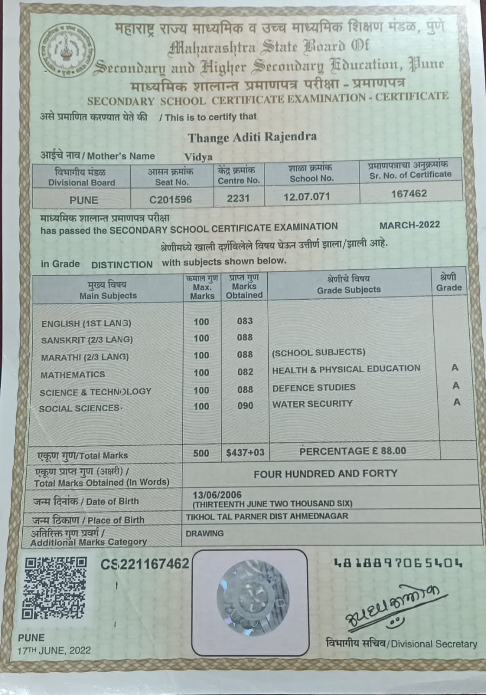
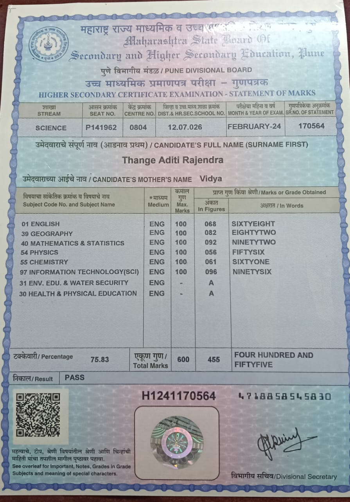
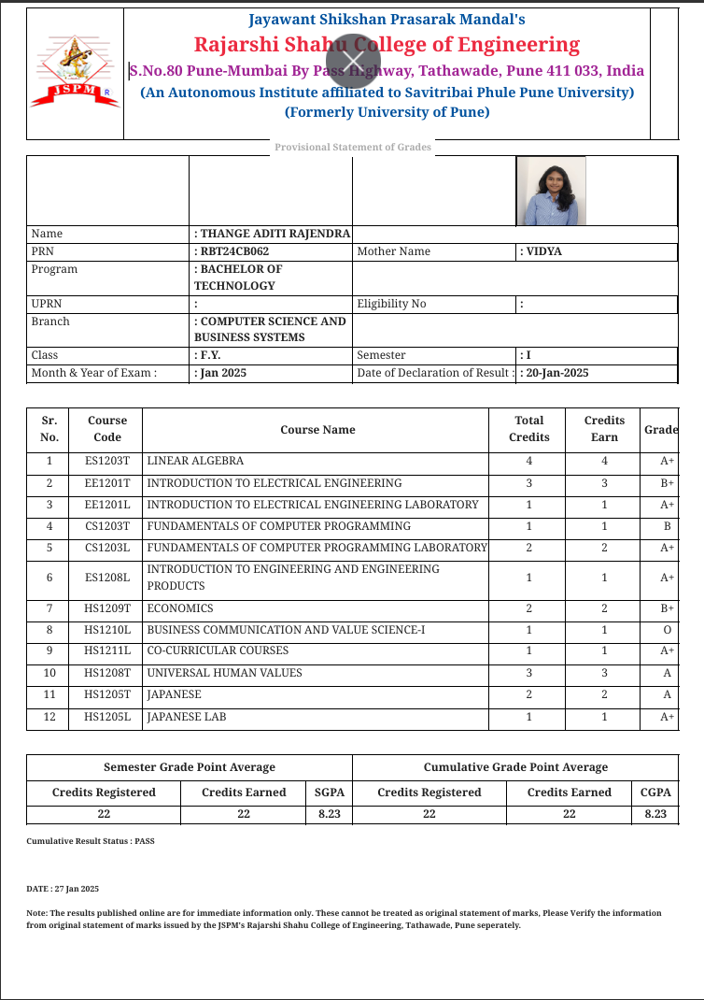
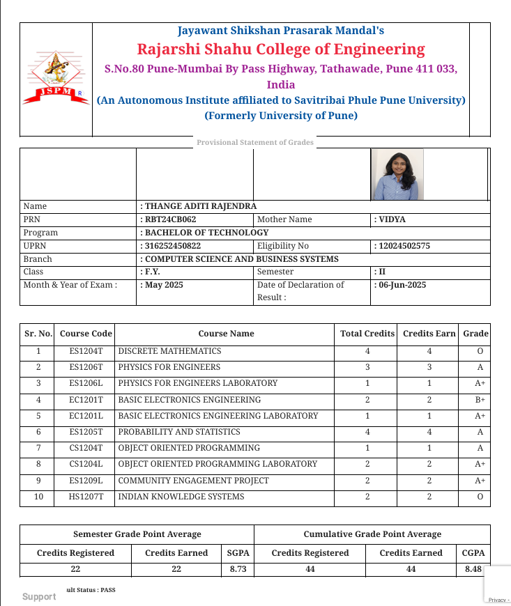
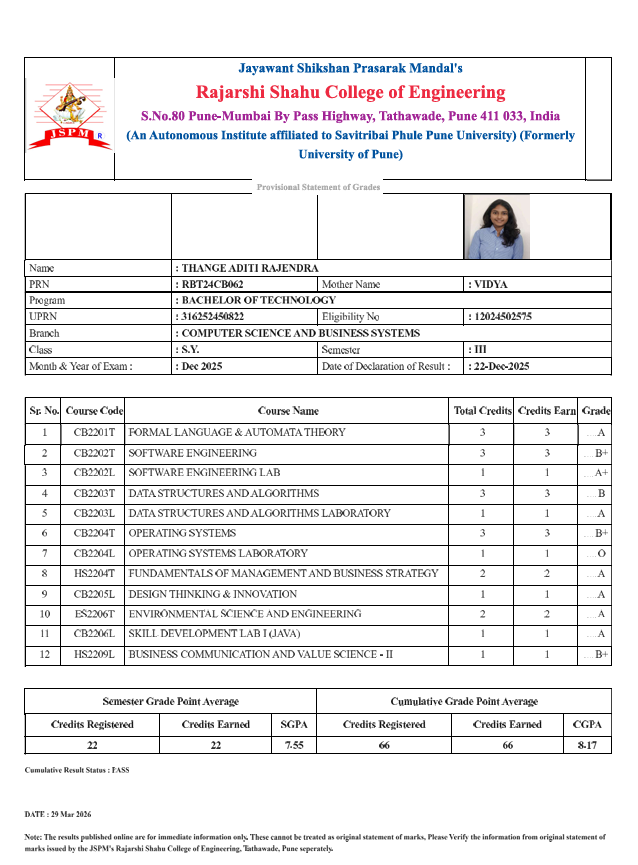

Academic Records
10 Score Card

I focused on building a strong academic foundation by developing essential programming and analytical skills while adapting to the new learning environment with enthusiasm and discipline.
12 Score Card

I focused on strengthening my understanding of Physics, Chemistry, and Mathematics, developing analytical and problem-solving skills that built a strong base for my engineering studies.
Semester 1

I focused on building a strong academic foundation by developing essential programming and analytical skills while adapting to the new learning environment with enthusiasm and discipline.
Semester 2

I continued to enhance my technical understanding by exploring new concepts and applying them through projects, demonstrating consistency and dedication to improving my programming abilities.
Semester 3

In Semester 3, I advanced my DSA and OOP skills through complex problem-solving and projects.I also worked on databases and backend integration, improving my coding and debugging efficiency.Additionally, I focused on writing optimized, scalable, and well-structured code..